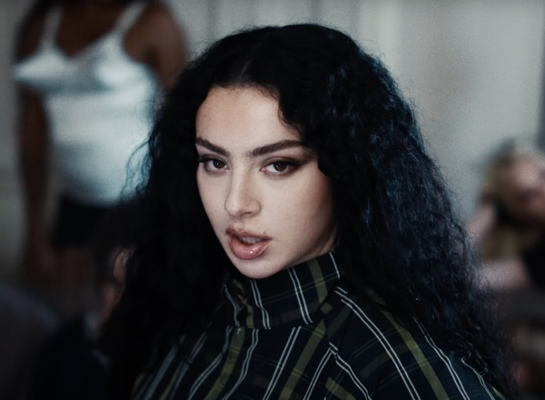
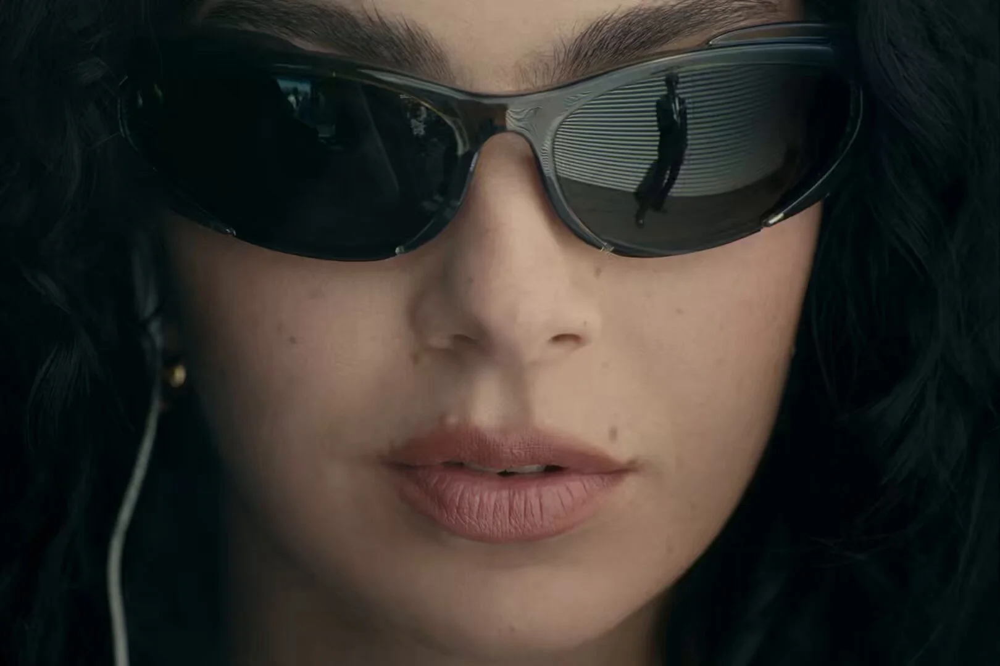

Charli xcx

Charlotte Emma Aitchison (Cambridge, 2 de agosto de 1992),
mais conhecida pelo seu nome artístico Charli xcx — e até 2024,
por Charli XCX, com maiúsculas —, é uma cantora, DJ, compositora, diretora e It girl britânica.
Aos 14 anos de idade, Charli começou a gravar seu álbum de estreia. Deste, dois singles foram lançados
sob a Orgy Music no final de 2008: "!Franchesckaar!" e o Lado A duplo "Emelline"/"Art Bitch". O disco,
14 - que continha a primeira composição citada - nunca foi comercialmente distribuído, embora tenham
sido impressas várias cópias promocionais. Cinco anos mais tarde, foi lançado seu primeiro disco de
estúdio oficial, True Romance, através das Asylum, Atlantic, IAMSOUND.
Como cantora, Charli já alcançou o n.º 1 da parada de singles do Reino Unido, a primeira vez como artista
participante, em "I Love It" — da dupla sueca Icona Pop — , em 2013, e a segunda como artista principal
no single "Guess" - que conta com a participação da americana Billie Eilish -, em 2024. Em 2014, foi
lançado o single "Fancy", de Iggy Azalea, cujo refrão e ponte são cantados por xcx.
A canção tornou-se um dos maiores êxitos de 2014, permanecendo no topo da Billboard Hot 100
durante sete semanas consecutivas.
Biografia
A artista nasceu em Cambridge,
e foi criada em Stevenage. É filha de um escocês com uma inglesa de ascendência
indiana. A cantora começou a escrever suas primeiras canções aos 14 anos de idade.
Charli frequentou o Bishop's Stortford College, onde terminou o ensino médio em 2010.
Era atual - Brat (2024)
 Brat, o sexto álbum de estúdio de Charli XCX, marca um afastamento
significativo de seu trabalho anterior, misturando elementos hyperpop com influências
do punk rock. Lançado em 7 de junho de 2024, o álbum mostra a abordagem experimental de
Charli à música eletrônica, ultrapassando os limites da música pop e abraçando um espírito
cru e rebelde.
Na fase de produção, XCX colaborou com um grupo diversificado de produtores e artistas.
O processo criativo foi marcado por sessões de gravação espontâneas e foco na captura de
sons autênticos e não polidos. Na produção, a cantora abraçou o espírito DIY, muitas vezes
gravando em ambientes não convencionais e priorizando a energia bruta em detrimento da perfeição.
O estilo musical de Brat é caracterizado por sua mistura eclética de sons futuristas da rave music
e atitude corajosa do pop dance. O álbum apresenta vocais distorcidos, sintetizadores abrasivos
e batidas dançantes, criando um som caótico, porém coeso. Faixas como “365” e “Everything is Romantic” exemplificam essa fusão, misturando refrões cativantes com produção intensa e de alta energia.
Inspirada por um folheto rave neon dos anos 1990 e pelos créditos do título da comédia de
Gregg Araki de 2007, Smiley Face, XCX, chama a cor da capa do álbum de “na verdade, bastante nojenta”
e diz que a escolheu porque “desencadeia uma conversa realmente interessante sobre [desejabilidade]".
"Tinha que ser muito hostil e nada legal.” Seu tom chocante (a propósito, é Pantone 3570-C) e
formato facilmente replicável geraram viralidade em massa – até mesmo os empresários do LinkedIn,
longe de seu público-alvo, estão anunciando-o como “marketing genial”.
Brat foi amplamente aclamado pela crítica, e pelos fãs elogiado por sua experimentação ousada e
inovação na combinação de gêneros. Brat também obteve sucesso comercial, com estreias altas nas paradas de sucessos.
Brat, o sexto álbum de estúdio de Charli XCX, marca um afastamento
significativo de seu trabalho anterior, misturando elementos hyperpop com influências
do punk rock. Lançado em 7 de junho de 2024, o álbum mostra a abordagem experimental de
Charli à música eletrônica, ultrapassando os limites da música pop e abraçando um espírito
cru e rebelde.
Na fase de produção, XCX colaborou com um grupo diversificado de produtores e artistas.
O processo criativo foi marcado por sessões de gravação espontâneas e foco na captura de
sons autênticos e não polidos. Na produção, a cantora abraçou o espírito DIY, muitas vezes
gravando em ambientes não convencionais e priorizando a energia bruta em detrimento da perfeição.
O estilo musical de Brat é caracterizado por sua mistura eclética de sons futuristas da rave music
e atitude corajosa do pop dance. O álbum apresenta vocais distorcidos, sintetizadores abrasivos
e batidas dançantes, criando um som caótico, porém coeso. Faixas como “365” e “Everything is Romantic” exemplificam essa fusão, misturando refrões cativantes com produção intensa e de alta energia.
Inspirada por um folheto rave neon dos anos 1990 e pelos créditos do título da comédia de
Gregg Araki de 2007, Smiley Face, XCX, chama a cor da capa do álbum de “na verdade, bastante nojenta”
e diz que a escolheu porque “desencadeia uma conversa realmente interessante sobre [desejabilidade]".
"Tinha que ser muito hostil e nada legal.” Seu tom chocante (a propósito, é Pantone 3570-C) e
formato facilmente replicável geraram viralidade em massa – até mesmo os empresários do LinkedIn,
longe de seu público-alvo, estão anunciando-o como “marketing genial”.
Brat foi amplamente aclamado pela crítica, e pelos fãs elogiado por sua experimentação ousada e
inovação na combinação de gêneros. Brat também obteve sucesso comercial, com estreias altas nas paradas de sucessos.
Último vídeoclipe
Clique na imagem para reproduzir

Guess featuring Billie Eilish - Charli xcx (2024)